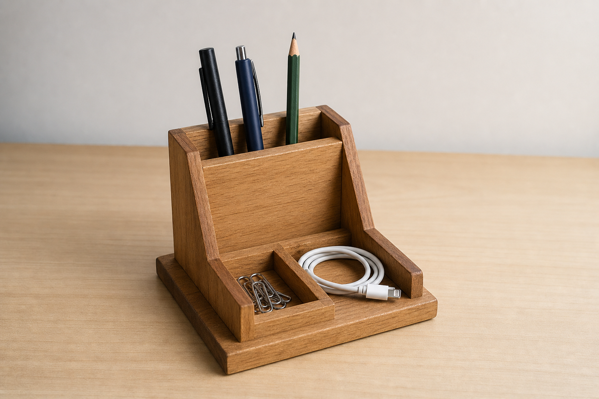
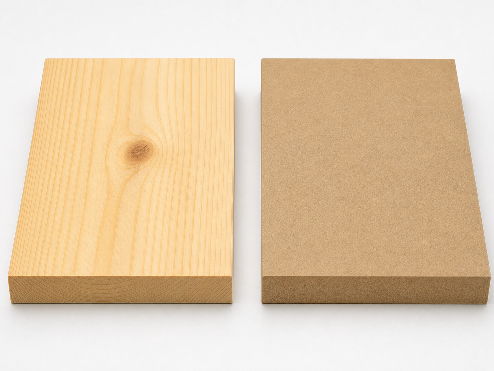

Learning pathway
Brief, safety and materials
Read the three theory sections, complete the checks and written responses, then save your evidence as a PDF.
- 1Define the user need
- 2Control workshop risk
- 3Compare materials responsibly
Student evidence
Your details
Autosave is on
Designing from a real need
Designing for an organised workspace
A desk can quickly become cluttered with pens, pencils, cables, paperclips and other small items. When these objects do not have a clear storage place, they can be difficult to find, take up useful work space or fall onto the floor. A timber Desk Tidy provides a practical way to organise selected items so the workspace is easier to use.
A design brief is a short statement explaining what needs to be designed, who it is for and what it should achieve. For this project, you will research, design, plan, build and evaluate a functional wooden organiser. The brief guides your decisions, but it does not give you a fixed layout to copy.

The user is the person who will use the Desk Tidy. Before drawing ideas, identify what that person stores and how they use their workspace. One user may need quick access to pens and pencils, while another may need spaces for cables, loose paperclips or a combination of items. A useful design responds to these actual needs rather than adding features without a clear purpose.
Your research and early sketches should explore different arrangements. Consider which items need separate spaces, which items can be grouped together and how easily each item can be placed into or removed from the organiser. The layout should suit the intended desk area and remain practical during normal use.
Design criteria turn the brief and user needs into statements that can be checked. Strong criteria are specific and measurable. Instead of writing “it must look good”, explain what will be examined, such as whether the parts are neatly aligned and the finished organiser suits the intended workspace.
Possible design criteria
- Stores the user’s selected pens, pencils, cables or paperclips.
- Allows stored items to be reached and returned easily.
- Fits the intended desk space without blocking normal work.
- Remains stable when the selected items are stored or removed.
- Has a layout that matches the user’s stated priorities.
- Can be tested and evaluated against the original design brief.

Working safely starts before a tool is picked up.
Hazards, risks and controls in the timber workshop
A hazard is anything that could cause harm. In the Desk Tidy project, hazards may include sharp edges, moving tools, timber dust, loose leads, spills or damaged equipment. Risk is the chance that harm will occur and how serious it could be. A control is an action used to remove the hazard or reduce the risk.
The hierarchy of controls places the strongest actions first. Removing clutter or taking faulty equipment out of use eliminates a hazard. Using a safer approved process or keeping others clear can substitute or isolate the hazard. Guards, clamps and dust-control systems are engineering controls. Teacher demonstrations, OnGuard or SOP checks and workshop routines are administrative controls. PPE is the final layer because it does not remove the hazard.

During measuring and marking, keep the bench clear, position timber securely and store sharp tools safely. For cutting and drilling, use only the teacher-approved tool and process after instruction and authorisation. Secure the work as demonstrated, keep hands away from danger areas and never distract another student using equipment.
Sanding can create dust, while gluing and finishing can involve spills or contact with workshop products. Use only approved materials in the demonstrated way, manage containers carefully, clean spills as directed and follow the product information, OnGuard and SOP requirements supplied by the teacher. Do not guess about an unfamiliar product or process.
Good housekeeping is a safety control. Return tools, remove offcuts, manage leads, clear dust using the approved method and keep walkways open. Check that guards and safety features are present and equipment appears serviceable. Report faults, damage, spills, unusual noise or unsafe behaviour immediately, then stop until the teacher says it is safe.
Hierarchy and project controls
- Eliminate: Remove clutter, spills and faulty equipment from use.
- Substitute or isolate: Use the safer approved process and keep others clear.
- Engineering controls: Use guards, clamps and dust controls as provided.
- Administrative controls: Follow instruction, authorisation, OnGuard, SOPs and workshop routines.
- PPE: Wear the required protection as the final layer, not the only control.
Good design starts with understanding the material before making a choice.
Choosing materials responsibly

Materials have different properties that affect how a product looks, feels and performs. During this project you may investigate workshop material samples to understand their strengths and limitations. Looking at samples helps you make informed design decisions, but investigating a material does not automatically mean it will be used in your Desk Tidy. The final material is determined by your teacher and project requirements.
Radiata pine is a timber with visible grain that gives each piece a unique appearance. It is generally easy to shape and sand, making it a common material for learning woodworking skills. MDF (medium-density fibreboard) has no natural grain and usually provides a smooth, even surface. However, its edges and working characteristics differ from solid timber. Comparing these materials helps you recognise that different properties suit different design situations.
When designing a small organiser, students should think about more than appearance. A suitable material needs enough strength for everyday use, edges that can be finished neatly, and surfaces that suit the intended design. It should also allow accurate measuring, shaping and assembly using teacher-approved workshop processes. There is rarely one perfect material, so designers compare several properties before making a decision.
Responsible material use means selecting suitable stock, planning carefully and reducing waste wherever possible. Thoughtful marking out can reduce unnecessary offcuts, while using materials efficiently helps conserve resources. Designers should also consider whether timber comes from responsibly managed sources, recognising that renewable materials are most sustainable when they are used wisely rather than wasted.
| Property | Radiata pine | MDF |
|---|---|---|
| Appearance | Visible natural grain | Smooth, uniform surface without visible grain |
| Edge quality | Natural timber edge | Edge behaves differently to solid timber |
| Shaping | Generally easy to shape and sand | Different working characteristics |
| Strength for a small organiser | Considered as one possible option | Also considered according to project needs |
| Surface finish | Natural grain can influence appearance | Even surface can influence appearance |
Guided practice
Weeks 1-2 knowledge checks
Choose an answer, check it and use the feedback to improve. Hints become more specific after an incorrect attempt.
Apply your learning
Scaffolded written responses
Write your own response first, use the live guidance, then check the appropriate response example.
Finish the two-week block
Save your evidence
Your answers save in this browser as you work, but browser storage is not the official submission. Save the completed page as a PDF before closing it.
No marks, answers or personal information are sent from this webpage.